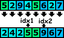
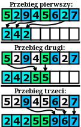

Funkcja dzieląca tablicę - część I
W poprzedniej lekcjach omawialiśmy algorytm sortowania przez z scalanie.
Pierwszą lekcję zaczęliśmy od omówienia funkcji „scal”, a następnie zajęliśmy się wykorzystaniem
tej funkcji w algorytmie sortowania. Obecna i następna lekcja będzie miała podobną strukturę.
Skupimy się w nich na „szybkim algorytmie sortowania” (ang. QuickSort).
Jednak zanim przejdziemy do omawiania tego algorytmu musimy poznać jedną bardzo ważną
funkcję wykorzystywaną przez ten algorytm. Owa funkcja nosi nazwę „podziel”.

Funkcja „podziel(n, &idx1, &idx2)” dzieli tablicę na trzy części.
Funkcja powinna działać tak, iż weźmie wartość pierwszego elementu - nazwijmy ją „wartością osiową”,
a następnie poprzestawia elementy tak, że na początku znajdą się elementy mniejsze od „wartości osiowej”,
następnie równe, a za nimi większe od tej wartości. Dodatkowo twoja funkcja (za pomocą referencji)
powinna zwrócić dwie liczby: idx1, idx2, które oznaczają odpowiednio początek
i koniec fragmentu tablicy, w której znajdują się elementy równe „wartości osiowej”.
Zasadę działania funkcji podziel dobrze obrazuje poniższy rysunek:
 Docelowo będziemy chcieli zaimplementować funkcję „podziel”, aby działała bezpośrednio na tablicy,
którą funkcja dostaje jako parametr. Jednak w tej części zajmiemy się przypadkiem prostszym,
w którym dysponujemy dodatkową tablicą. W osobnym oknie pojawiły się dwie tablice liczb:
Na górze znajduje się początkowa tablica, a na dole docelowa.
Funkcja „podziel” powinna przenieść elementy tak, aby na dole utworzyć tablicę podzieloną na trzy części
zgodnie z założeniami omówionymi w drugim akapicie.
Do posługiwania się tablicami wyświetlonymi w osobnym oknie funkcja „podziel” powinna skorzystać
z dwóch funkcji specjalnych: „porownaj(idx)” i „przenies(idxSkad, idxDokad)”.
Wspomnienie funkcje są szerzej omówione w zakładce „funkcje specjalne”.
Docelowo będziemy chcieli zaimplementować funkcję „podziel”, aby działała bezpośrednio na tablicy,
którą funkcja dostaje jako parametr. Jednak w tej części zajmiemy się przypadkiem prostszym,
w którym dysponujemy dodatkową tablicą. W osobnym oknie pojawiły się dwie tablice liczb:
Na górze znajduje się początkowa tablica, a na dole docelowa.
Funkcja „podziel” powinna przenieść elementy tak, aby na dole utworzyć tablicę podzieloną na trzy części
zgodnie z założeniami omówionymi w drugim akapicie.
Do posługiwania się tablicami wyświetlonymi w osobnym oknie funkcja „podziel” powinna skorzystać
z dwóch funkcji specjalnych: „porownaj(idx)” i „przenies(idxSkad, idxDokad)”.
Wspomnienie funkcje są szerzej omówione w zakładce „funkcje specjalne”.

Na początku zaimplementujmy funkcję „podziel” w najprostszej postaci, tzn. wykonajmy trzy przebiegi.
W pierwszym przebiegu przenieśmy liczby, które są mniejsze od „wartości osiowej” (pierwszy element tablicy).
W drugim przebiegu przenieśmy liczby, które są równe „wartości osiowej”,
a następnie w trzecim przenieśmy liczby większe od tej wartości.
Wizualizacja wspomnianego algorytmu jest pokazana na poniższym rysunku: